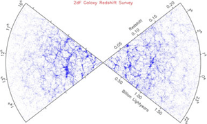
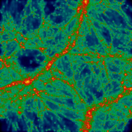

| Galaxies are not generally found in isolation, nor are they randomly distributed throughout the Universe. Most are surrounded by a swarm of satellite galaxies and are themselves embedded in larger aggregates called groups or clusters. These large concentrations of galaxies form part of even larger scale structures such as the galactic filaments and sheets which contain millions of galaxies. Between these enormous walls of galaxies lie regions which are very sparsely populated – these are known as ‘galactic voids’. |

The Australian led 2dF galaxy survey measured accurate distances to hundreds of thousands of galaxies. This image, which shows the spatial distribution of ~100,000 galaxies, reveals that large-scale structures and voids are clearly observable in the local Universe.
Credit: M. Colless (ANU) and the 2dF Galaxy Redshift Survey |

Credit: Chris Power, Swinburne University
Voids have typical sizes of hundreds of millions of light years and occupy about 90% of known space. Although their name suggests that voids are completely empty of galaxies, this is not actually true. Deep (long exposure) imaging shows that even within voids a few galaxies are present, often in faint filaments (the poor cousins to the monstrous, bright filaments often found at the boundaries between voids).
Astronomers believe that voids are formed by the hierarchical clustering of galaxies around primordial density fluctuations (quantum mechanical fluctuations in the density of the Universe in the very first moments following the Big Bang). It is thought that as the matter built up around regions of higher density in the early Universe, matter was lost from the lower density regions – a process which lowered the densities in these regions even further. These low density regions are what we see today as voids.
If hierarchical clustering is indeed responsible for the formation of galactic voids, sheets and filaments, it is interesting to consider that while these enormous structures reveal a great deal about the present day Universe on the largest scales, they also tell us something about processes on the very smallest scales in the very early Universe.